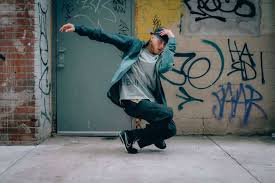
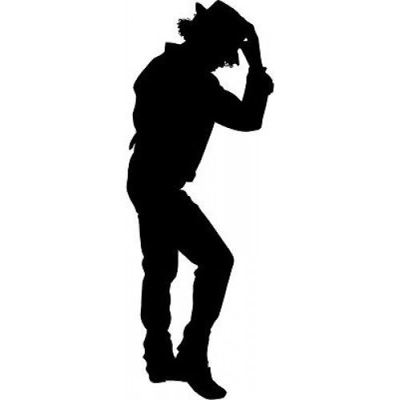
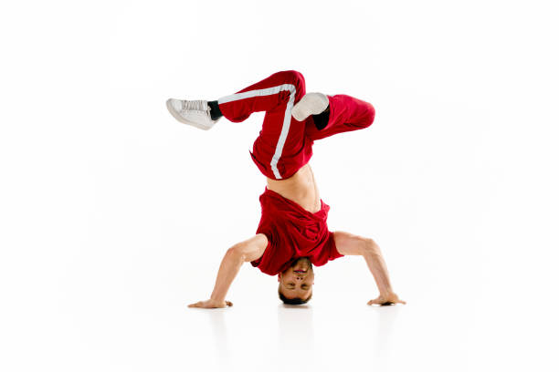

Freeze Pose
A gravity-defying pose where the dancer holds their body off the ground, showcasing strength and control.

Lock Pose
Characterized by sudden pauses in movement, adding a playful and expressive flair to the performance.

Pop Pose
Involves contracting and relaxing muscles to create a jerking effect, highlighting the dancer's control and rhythm.

Dougie
A dance move where the dancer moves their body in a relaxed, swaying motion, often incorporating arm movements.

Moonwalk
A gliding move that gives the illusion of the dancer moving backward while attempting to move forward.

headspin
A move where the dancer spins on their head, requiring balance and momentum.